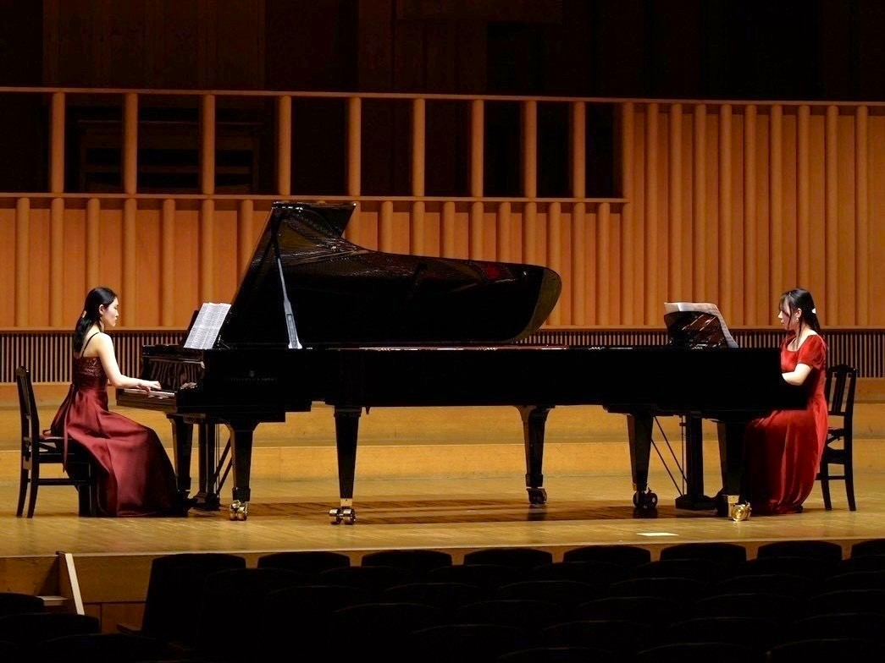
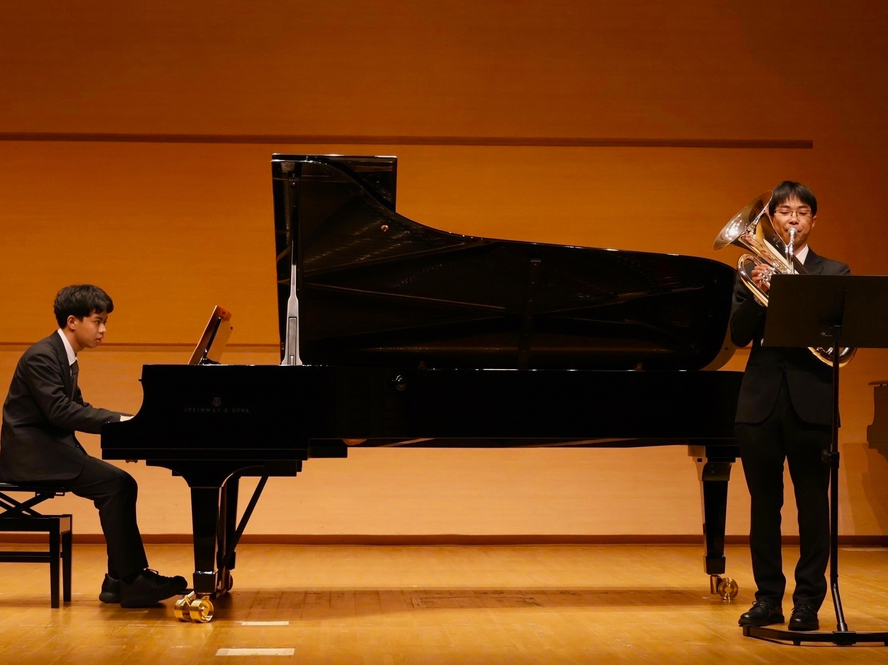
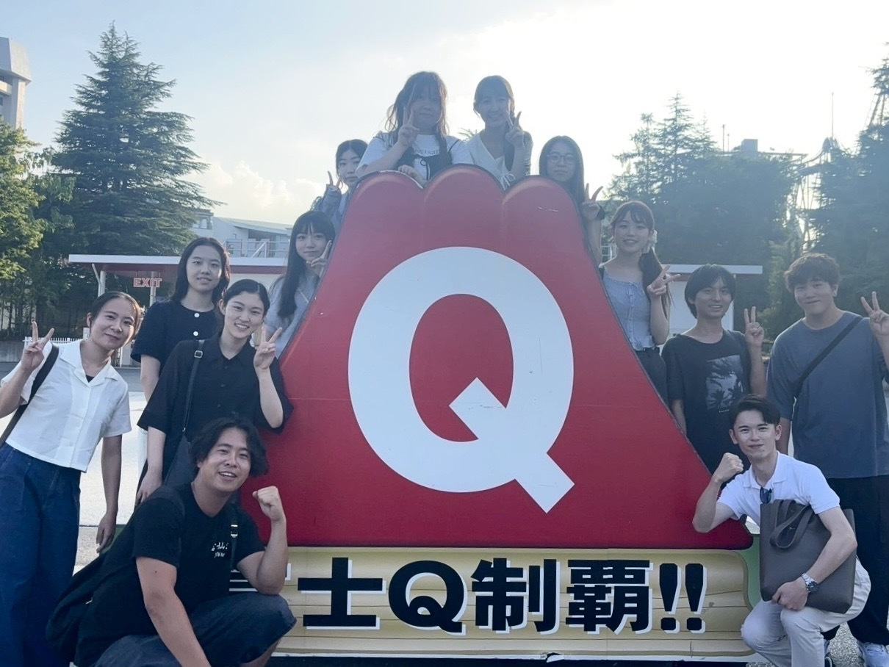
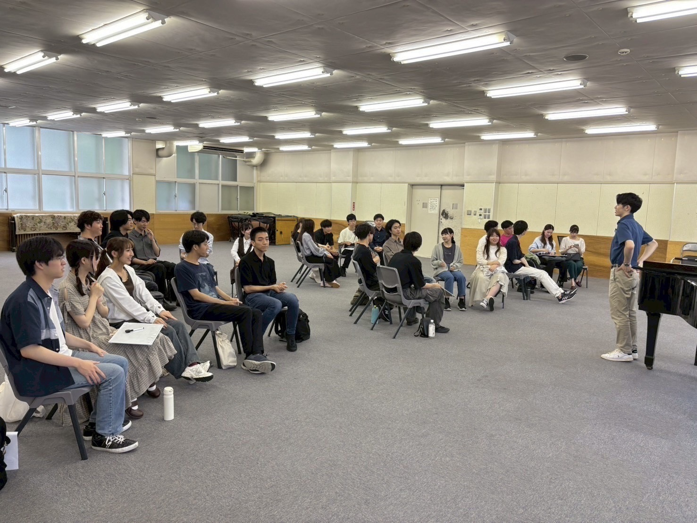

演奏会
平均して月に1回ほど、演奏会を開催しています。
参加はすべて自由で、年会費以外に追加の費用はかかりません。
ソロや連弾はもちろん、演奏会によっては二台ピアノや他楽器とのアンサンブルも可能です。
クラシックからポップスまで、幅広いジャンルの楽曲が演奏されています。




ここでは、演奏会やイベント、普段の活動内容についてご紹介しています。
平均して月に1回ほど、演奏会を開催しています。
参加はすべて自由で、年会費以外に追加の費用はかかりません。
ソロや連弾はもちろん、演奏会によっては二台ピアノや他楽器とのアンサンブルも可能です。
クラシックからポップスまで、幅広いジャンルの楽曲が演奏されています。


演奏会のほかにも、さまざまなイベントを随時開催しています。
参加は自由ですが、別途参加費がかかります。
豪華な景品が用意されることもあり、サークル員同士の交流を深める良い機会となっています。


駿河台キャンパスの音練3と、和泉キャンパスの会議室1、LS101にてピアノを弾くことができます。
各自が自由に練習を行うほか、みんなでわいわいと話したり、集まって課題に取り組んだりすることもあります。